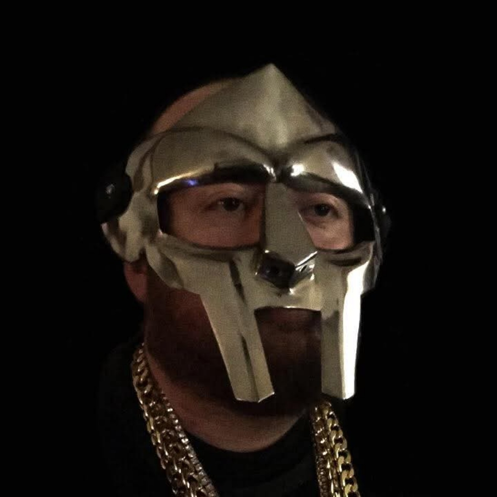

“Rare Breed” earns a dedicated feature
Read the press coverage →EDM Nations published coverage of track 3, adding an outside editorial perspective to the B2BAL story.
Twenty tracks built from survival, fatherhood, conflict, loyalty, ownership—and five missing years turned into a comeback.

Twenty tracks. Five missing years. One comeback—and a new milestone for Mark Allen and Hustle Legend Records.
Source: Spotify for Artists album dashboard supplied by Mark Allen, September 2026. The 28-day figures describe the window shown in that snapshot; they are not lifetime listeners or live counters. Percentage changes are as displayed by Spotify.
EDM Nations published coverage of track 3, adding an outside editorial perspective to the B2BAL story.
Torown serves as Artist Relations Manager. DJ Nick Nasty continues as A&R Director, with a focus on features, mixtapes, remixes and collaborations.
Danielle Hein’s writing credits on “Started This War” and “Got a Problem” sit alongside her image-consulting work and the Barb!3 x HLR merchandise collaboration.
Every track is a doorway into writing, delivery, history and the connections hiding between songs.
Decode punchlines, callbacks, internal rhyme, entendres, misdirection and the meaning underneath the first listen.
See how point of view, sequence, emphasis and performance can change the meaning of a record.
Follow the album as interconnected evidence: songs, dates, people, themes, milestones and documented history.
The site remembers which B2BAL chapters you explore on this device. Milestones unlock at 5, 10, 15 and all 20 tracks. No login. No fake follow.
BEGIN THE 20-TRACK RUNMark Allen is an independent hip-hop artist, songwriter, producer and catalog owner now residing in Breese, Illinois, where he continues building Hustle Legend Records from a quieter chapter of his life. His work is grounded in ownership, lived experience, wordplay and the belief that difficult subjects do not have to be diluted to be worth discussing.
Allen is a strong believer in free speech and freedom of artistic expression. That conviction shapes an independent approach built around creative control: artists should be able to explore, question, criticize, provoke and express themselves through their work while standing behind what they release.
Creative control, catalog ownership and a long-term approach to the work.
Art can confront uncomfortable subjects without demanding that every listener agree.
Real photographs, dated milestones and sourced records preserve the story without manufacturing it.

Born 2 Be A Legend is Mark Allen's first official release and the centerpiece of the current Hustle Legend Records era. Released April 5, 2026, it moves through survival, family, addiction, confrontation, identity, humor, ambition and ownership.
The writing rewards replay. Some lines hit as jokes or flexes first and reveal heavier memories later. Other tracks connect to events several songs away. HLR is preserving those layers instead of flattening the record into a streaming link.
Listen, discover, submit, follow the story and move through Hustle Legend Records without depending on one outside platform to hold the whole relationship.
Label-controlled programming with the full Born 2 Be A Legend rotation and direct HLR-hosted radio copies.
Enter the station →INSTALLABLEHLR AppThe lightweight home screen for radio, catalog, press, merch, licensing and the Artist Gateway.
Open the app →ARTISTSArtist GatewayIndependent artists can create a profile and route one submission toward HLR opportunities.
Enter the gateway →STOREHLR MerchOfficial label and artist merchandise connected directly to the independent ecosystem.
Shop the label →New Jersey-born, Breese, Illinois-based writer, producer and independent catalog owner directing the B2BAL era and Hustle Legend Records.

Shapes feature pairings, mixtape direction, remixes and collaborations—and appears on “Started This War.”
View official profile →
Shapes visual identity, story development and promotion; credited writer on “Started This War” and “Got a Problem,” and the creative identity behind Barb!3 x HLR.
View official profile →
Artist liaison and independent recording artist featured on “Told U,” connecting talent, communication and collaboration across the HLR network.
View verified profile →
Featured on Mark Allen’s “Kiss My Ass,” with longtime family ties to Mark Allen. Creator and host of “Mick Mondays” on YouTube.
Watch Mick Mondays on YouTube →Featured on Mark Allen’s “Got A Problem.” Explore his solo catalog with All Of Me (The Mixtape), available on Audiomack.
Listen to All Of Me on Audiomack →Independent reactions give the Born 2 Be A Legend era another layer: unscripted outside perspectives on the records, bars and moments that land.
Explore the YouTube reaction playlist collecting third-party reactions and coverage connected to Mark Allen and the album.
WATCH THE REACTION PLAYLIST